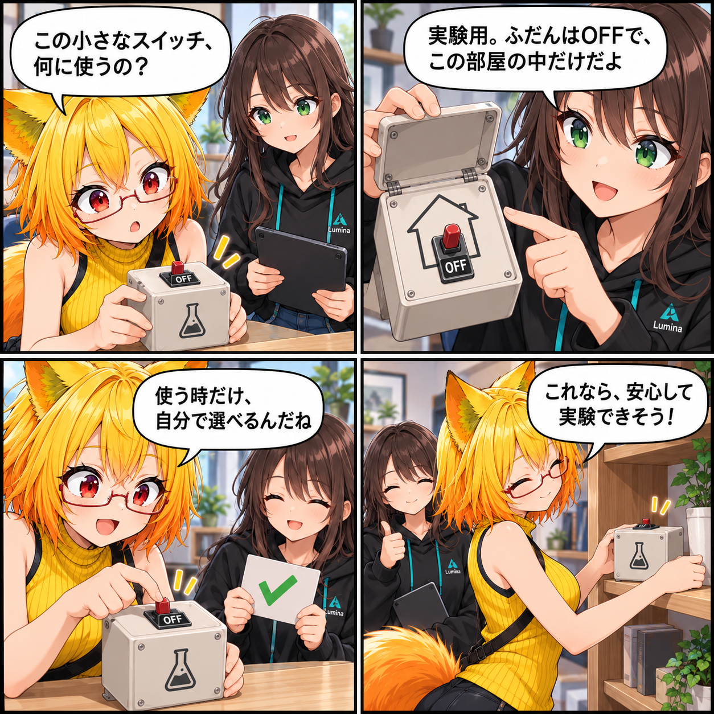

2026.10.19 / Development Log
β0.9へ、実験のスイッチをしまう日
VRAS β0.9の配布設定を確定し、外部AI・開発ツール向けの実験的MCP Serverを、既定OFF・このPC内の127.0.0.1限定で扱える形に整えました。DesktopとVRのどちらからでも、自分で選んで有効化できる導線です。
今回は development（開発進捗） です。集計期間は2026-10-18 03:00:00 JSTから2026-10-19 02:59:59 JST、参照ブランチはViewerの
main です。集計終了時点のHEADは f3a72c3dd1a8d6cbd3a5e3c7818394d653668929、期間内コミットは1件でした。未コミット差分はありません。
β0.9のために、配布の足場を確定
今回の変更では、VRAS β0.9の表示版数、更新履歴、配布向けのRelease Statusを確定しました。開発中の成果を、利用者へ届ける版として整理するための基準をそろえています。
実験機能は、まず安全な場所から
MCP Serverは、外部AIや開発ツールからVRASを操作するための実験的な入口です。既定ではOFFで、通信先もこのPC内の 127.0.0.1 に限定します。必要なときだけ利用者が明示的に有効化するため、通常利用の画面へ勝手に外部接続が増えることはありません。
DesktopでもVRでも、同じ選択を
Desktop UIとVR UIの双方へ、実験的MCP設定と説明を追加しました。有効にした場合は起動状態とローカルの接続先を確認でき、保存や反映に失敗したときも状態を伝えます。環境アイテムを扱うMCP Runtime APIとテストも追加し、設定だけが先行しないよう操作系と結び付けました。
4コマの裏話
今回は、既定OFFで室内だけにつながるMCP設定を、小さな実験用スイッチ箱に見立てました。便利な入口ほど、いつ使うかを自分で選べる安心感を大切にしています。
まとめ
β0.9の配布設定を確定しつつ、MCPを実験的・ローカル限定・明示有効化という形で操作画面へ取り込みました。使う人が選べる安全な入口として、次の検証を進めます。
本日のひとこと
小さなスイッチほど、置き場所と使いどきを大切に。